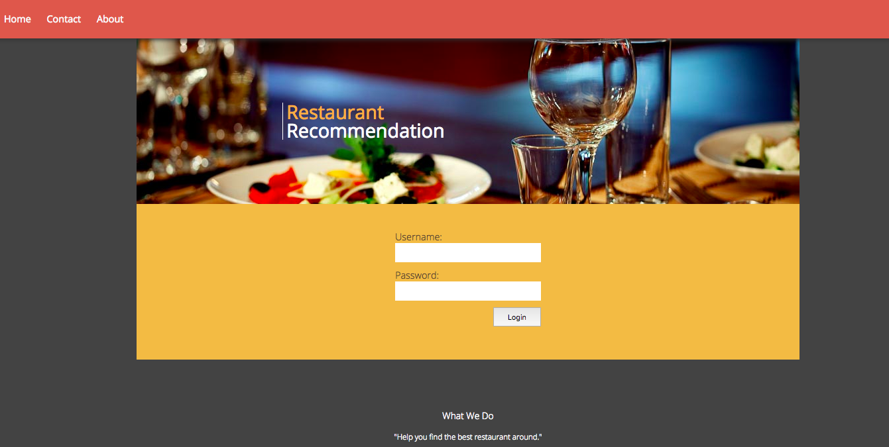
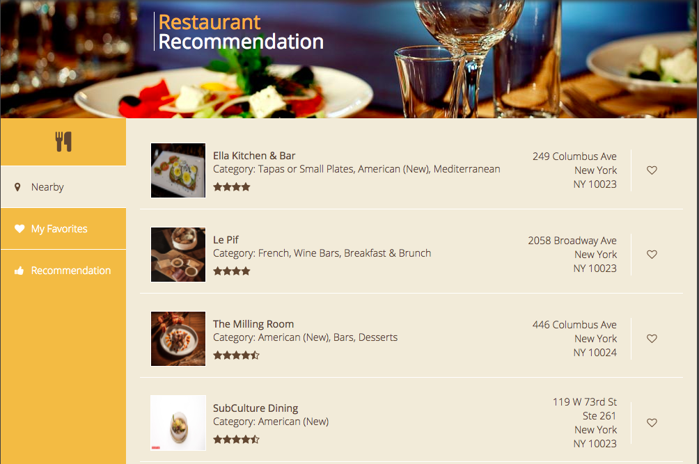

YummyFood Restaurant Recommendation
I took the full responsibility of building the front-end and back-end infrastucture of this web app from scratch. The main purpose of "YummyFood" is to use personalization to improve restaurant search and recommendation based on search history, favorite record and geo-location. In addition, I also developed a mobile app version on the Android platform. All the restaurants data are fetched by using Yelp API. The users are able to record the favorite restaurants by clicking the heart symbol on the right hand side of each restaurant listing. The system keep track of the favorite restaurant record based on the geo-location of users.
Back End:
- • Built Apache Tomcat servers using Java servlets with RESTful APIs to handle HTTP requests and response.
- • Built relational and NoSQL databases (MySQL and MongoDB) to fetch real restaurant data from Yelp API.
- • Developed a collaborative filtering algorithm based on similarity scores to improve recommendation precision.
- • Designed a MapReduce program in MongoDB to calculate similarity scores between users to enhance the scalability when it tried to make recommendation
- • Deployed server side to Amazon EC2 that is able to handle 200 queries per second tested by Apache JMeter
- • Built a search engine using ElasticSearch to collect users’ geo-location log from remote environment.
- • Utilized Logstash to build a dynamic and real time pipeline for log reporting and transforming.
- • Visualized logs with Kibana to analyze and track the user geo-location density and distribution around the world.
Please feel free to explore this app. As for the log-in credential, you can find it on my resume.
Figure 1 - Yummy Food Restaurant Search and Recommendation Log-in Page 
Figure 2 - Demonstrate all the nearby restaurants based on your current geo-location

Figure 3 - Illustrate the favorite restaurants of the users based on user's searching and like history
Figure 4 - Make restaurant recommendation to the users using collaborative filtering algorithm
Figure 5 - Display the geo-location of all the users around the global region by Elastic Search, Logstasg and Kibana

For more technical details, you can get in touch with me by my eamil.